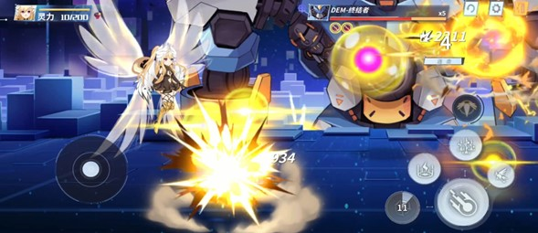
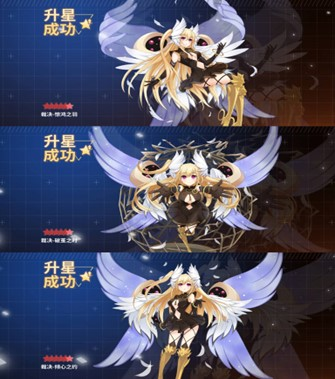
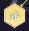

Mayuri
Contributor: Phạm Việt Trung
1. Tổng quan (Overview)
Tên: Mayuri – “Judgement”Nhân vật: 5 sao

Hệ nguyên tố: Lôi
Vai trò: Dps/Debuff
Trạng thái (Status):
2. Nội tại (Passive)
Đòn tấn công với sát thương thêm, sát thương nguyên tố lôi (gọi tắt là sát thương sét), tấn công cơ bản và thi triển kĩ năng có thể nhận được linh lực, mỗi đòn tấn công có 10% cơ hội áp dụng 1 lớp trạng thái phán quyết lên mục tiêu, kéo dài 5 giây.Thanh linh lực: 200 linh lực.
Khởi đầu: 0 linh lực.
Mỗi đòn đánh cơ bản và các đòn từ kĩ năng tăng 1 lượng nhỏ linh lực.
Hiệu ứng kích hoạt. Khi linh lực đạt 200 điểm sẽ tự động triệu hồi 3 tinh thể năng lượng liên lục phóng mũi tên về phía trước. Linh lực đặt lại về 0.
3. Cấp độ (Level)
* Cấp độ(lv) tối đa hiện tại của nhân vật có thể đạt được là 60lv, bằng với cấp độ chung của tài khoản.* Tăng cấp độ giúp bạn tăng các chỉ số cơ bản cho Mayuri.
4. Tiềm năng (Potential)
Tiềm năng bao gồm 7 cấp. Tiềm năng sẽ ảnh hưởng đến chỉ số char và giới hạn lông nâng cấp nhánh kĩ năng.Các cấp tiềm năng tiếp theo:
o Cấp 1: + 5 lông
o Cấp 2: + 5 lông
o Cấp 3: + 15 lông
o Cấp 4: + 10 lông
o Cấp 5: + 5 lông
o Cấp 6: + 10 lông
o Cấp 7: + 10 lông
7 cấp tiềm năng sẽ giúp bạn có thêm 60 lông để nâng tối đa 4 nhánh kĩ năng.
Nguyên liệu nâng cấp các mốc tiềm năng là các loại Usb. Usb có thể kiếm được khi mua trong shop, map daily…
Mỗi char cần 2 loại Usb, loại thứ nhất là Usb chung (Usb xanh hình dưới) và Usb nguyên tố (trùng với nguyên tố char sở hữu). Mayuri sẽ cần Usb nguyên tố lôi (Usb vàng hình dưới).
Một lưu ý nhỏ : Đối với những người chơi đã nâng full char ở bản cũ, 1 bấm nút nhấn màu vàng này sẽ giúp bạn nâng full ngay lập tức lever nhân vật, 7 cấp tiềm năng, cũng như cộng full 240 lông cho 4 nhánh kĩ năng.
Thông tin kĩ năng
a. Tổng quan Bộ kĩ năng của Mayuri bao gồm 7 kĩ năng, trong đó 6 kích năng kích hoạt và 1 kĩ năng ẩn.
Các kĩ năng của Mayuri, skill 1,2,3 và đánh thường được phân chia thành 4 nhánh và sẽ bao gồm các mốc Ex 1,2,3. Đây là 3 mốc đánh dấu sự nâng cấp của skill.
b. Chi tiết các kĩ năng
Đánh thường: Arrow Judgement
Dạng 1: Đòn tấn công thường (bấm thường) – Gọi tắt Aa
Dạng 2: Đòn tấn công nạp đủ tích tụ được bỏ qua thời gian niệm (Aa full charged skip casting) (bấm thường) – được nhắc đến ở dưới (Phần Thiên sứ) – Gọi tắt Aa2
Dạng 3: Đòn tấn công tích tụ (nhấn và giữ) qua 3 mức, chủ yếu đạt mức 3 tức nạp đủ tích tụ (Aa full charged) – Gọi tắt Aa3. Khi Aa3 Mayuri sẽ di chuyển chậm lại, hướng mũi tên bắn ra phụ thuộc vào hướng trỏ chuột tại cùng thời điểm.
o Ex2: Đòn tích điện có thể tích tụ đến mức 2, gây sát thương sét bằng 700% ATK
o Ex3: Đòn tích điện có thể tích tụ đến mức 3, gây sát thương sét bằng 900% ATK.
Skill 1: Thunder Storm
+ Mayuri tung ra 1 các lôi cầu về phía trước tạo ra các vụ nổ điện từ. Kĩ năng gây sát thương sét bằng 200% ATK. Các quả cầu tồn tại sau vụ nổ được tính là vật triệu hồi. (CD: 12s)
o Ex2: Sau đợt kích nổ đầu tiên của các lôi cầu sẽ tạo ra những lôi cầu nhỏ hơn và phát nổ lần hai, gây sát thương sét bằng 360% ATK.

Skill 2: Sanctuary
Mayuri triệu hồi 1 vùng thánh linh hình tròn tại 1 điểm chỉ định. Kĩ năng gây sát thương sét bằng 250% ATK (CD: 9s)
Skill 3: God’s Punishment
+ Giải phóng phóng sức mạnh Lôi thần điện, Mayuri tạo ra các cột thánh lôi xung quanh với bản thân là trung tâm. Gây sát thương sét bằng 280% sức mạnh công kích. (CD: 10s)
o Ex2: Khi kĩ năng kết thúc Mayuri sẽ tạo ra 1 vụ nổ toả đợt sóng xung kích gây sát thương sét bằng 570% ATK.
Ultimate: Twinkle
Mayuri giải phóng toàn bộ sức mạnh thực sự của Sword of Radiance (Final form Kerubiel: Lahathelev) giáng một đòn cực mạnh xuống một khu vực, gây sát thương sét bằng 1800% ATK trong phạm vi xác định.
Switch Skill (kĩ năng xuất trận)
+ Triệu hồi Mayuri xuất chiến gây 180% ATK cho những kẻ địch xung quanh
Teleport Skill : Sword Of Brilliant Flame
Chỉ đơn giản là kĩ năng dịch chuyển tức thời trong trận với thời gian hồi. Kỹ năng này có thể kết hợp sử dụng với các kĩ năng khác.
c. Thứ tự combo kĩ năng theo gợi ý
6. Bộ vết thánh (Sephira): Thunder Verdict
a. Hiệu ứng riêng từng mảnh: (ảnh minh hoạ)
* Mảnh Binah: Tấn công +25%
* Mảnh Chokmah: Sát thương chí mạng +30%
* Mảnh Tiphareth: Đòn tấn công cơ bản sát thương +20%
Mỗi mảnh sephira có thể nâng tối đa 60 level. Cần 1 mảnh trùng để nâng cấp sephira lên 6*
b. Hiệu ứng khi trang bị đủ bộ:
Tăng sát thương vật thể triệu hồi 20%. Khi các vật thể triệu hồi đang hiện hữu, tăng 17/21/26/32% sát thương nguyên tố lôi cho bản thân. Sau khi vật thể triệu hồi biến mất, hiệu ứng kéo dài thêm 5 giây
Đồng thời, 3 mảnh sephira sẽ giúp tạo 3 đường liên kết kabbalah, giúp đem lại 3 chỉ số cộng thêm.
c. Một số lưu ý đối với Sephira (seph):
Level của seph sẽ ảnh hưởng tới chỉ số, seph càng cao thì chỉ số đem lại càng cao (atk, def, máu cơ bản).
Sephira có thể trải qua 3 quá trình “tiến hoá”. Bao gồm 5 sao+, 5 sao++, 6 sao. Quá trình tiến hoá này giúp gia tăng chỉ số hiệu ứng đem lại của Bộ 3 sephira.
5 sao: 17%, 5 sao+: 21%, 5 sao++: 26%, 6 sao: 32%
7. Thiên sứ (Angel): Kerubiel “Lôi đình thánh đường”
• Ô thiên sứ thứ nhất: Extremely Fast Charging
+ Arrow Judgement: Tốc độ ra đòn của mũi tên phán xét tăng 30%, nôm na tốc độ đánh tay tăng 30%.
• Ô thiên sứ thứ hai: Templar Shackles
+ Khi đòn tấn công tích điện của Arrow Judgement gây sát thương, có 35% cơ hội gây 30% hiệu ứng giảm tốc và hiệu ứng sát thương liên tục trong 5 giây cho mục tiêu. Gây sát thương chuẩn bằng 15% sức mạnh công kích mỗi giây.
+ Hiệu lực này sẽ được kích hoạt lặp lại mỗi khi đòn tấn công kích hoạt hiệu ứng.
• Ô thiên sứ thứ ba: Thunder Field
+ Thunder Storm, Sanctuary, God’s Punishment (skill 1,2,3) sát thương tăng 25%.
• Ô thiên sứ thứ tư: Trial Mark
+ Mỗi đòn tấn công từ Mayuri chắc chắn áp dụng hiệu ứng Phán quyết lên mục tiêu. Khi tấn công mỗi đòn mang hiệu ứng tích điện, xác suất kích hoạt Thunder Storm tăng 10%.
• Ô thiên sứ thứ năm: Atmospheric Ionization 
+ Sát thương của Arrow Judgement gia tăng theo thời gian bay sau khi tích tụ và bắn. Arrow Judgement được tăng 5% sát thương sau mỗi 0.1 giây tích tụ, tối đa 30%.
• Ô thứ sáu: Time Of Verdict

+ Arrow Judgement: Nhấn và giữ đòn tấn công tích điện (đánh tay) qua ba mức tích tụ để ra đòn chí mạng. Sau khi thi triển, Thunder Storm, Sanctuary, God’s Punishment (skill 1,2,3), Arrow Judgement có thể ngay lập tức thi triển đòn tấn công dạng Aa2. Tuy nhiên sát thương giảm 30% so với đòn tấn công dạng Aa3.
8. Tương tác với các hệ nguyên tố
*Chú thích
- Mũi tên đỏ: Gây thêm 25% sát thương.
- Mũi tên vàng: Gây thêm 12.5% sát thương.
- Mũi tên xanh: Giảm 25% sát thương gây ra.
*Lưu ý:
Mayuri gây thêm 25% sát thương đối với mục tiêu hệ Băng và hệ Phép; đồng thời gây ít hơn 25% sát thương lên mục tiêu hệ Phong (Bão).
Mayuri gánh chịu thêm 25% sát thương từ hệ Phong, 12.5% sát thương từ hệ Phép; đồng thời nhận giảm 25% sát thương gánh chịu từ hệ Băng.
Các hệ còn lại sát thương gây ra cũng như sát thương gánh chịu không thay đổi so với thông thường.
9. Đá quý (Gem stone)
+ Theo khuyến nghị trong game: Venus Stone, đá Vệ nữ:+ Hiệu quả của lối chơi khi trang bị bộ 2 và 4 buff của Venus Stone
• Bộ 2 mảnh đá quý Venus Stone tăng sát thương nguyên tố lôi của Mayuri
• Bộ 4 mảnh đá quý Venus Stone khi trang bị tăng đáng kể sát thương đòn tấn công tích điện của Mayuri.
*Ngoài ra có thể sử dụng mix 2 bộ đá quý khác, mỗi bộ 2 mảnh đá, nhằm tận dụng 2 buff từ mỗi bộ*.
Một số bộ có thể sử dụng tốt như:
Các chỉ số Chính khuyên dùng:
Đá vàng - Sapphire: Atk cộng thẳng
Đá đỏ - Ruby: Atk bonus
Đá xanh - Ngọc lục bảo: Atk bonus
Đá xanh dương - Kim cương: Crit rate
Các chỉ số Phụ khuyên dùng:
Crit rate
Crit dmg
Atk bonus
Atk cộng thẳng
Dmg increase ratio
10. Linh phục (Spiritual Outfit)
Linh phục gốc: Original OutfitLinh phục 2: Spirit Gear, Dawn Star
Linh phục 3: Inari Miko
Linh phục 4: Wings Of Judgement
11. Đánh giá
* Mayuri phiên bản mới (tính tới thời điểm làm tài liệu này) sẽ theo lối chơi sử dụng skill xen kẽ đòn bắn tay Aa2, kết hợp với đòn bắn tay Aa3 khi có thể nhằm tối ưu lượng sát thương gây ra.* Sát thương được định hướng ở lần làm lại mới tập trung hướng đến Đòn tấn công thường thông qua Aa2, Aa3. Lượng sát thương của Aa2, Aa3 trội hơn 3 skill còn lại, tuy nhiên nhược điểm là tỉ lệ trúng thấp, khó sử dụng trong thực chiến, đặc biệt khi gặp mục tiêu di chuyển, áp sát liên tục.
* Combo gợi ý: Skill 2 -> Aa2 -> Skill 1 -> Aa2 -> Skill 3 -> Aa2 -> Aa3 -> Ultimate (nếu có).
* Do thời gian hồi chiêu tương đối lâu, nên lối chơi spam skill sẽ tạm thời không hiệu quả.
* Nhìn chung mayuri hiện tại thích hợp đi các nơi/chế độ cần dọn dẹp quái hơn là boss, do boss thường khá cứng, né tránh cao, dễ làm đòn Aa2, Aa3 bị miss trong khi Aa2-3 hiện tại là sát thương lớn của Mayuri. Không có hồi máu cũng là 1 điểm yếu của Mayuri hiện tại khi thực chiến.